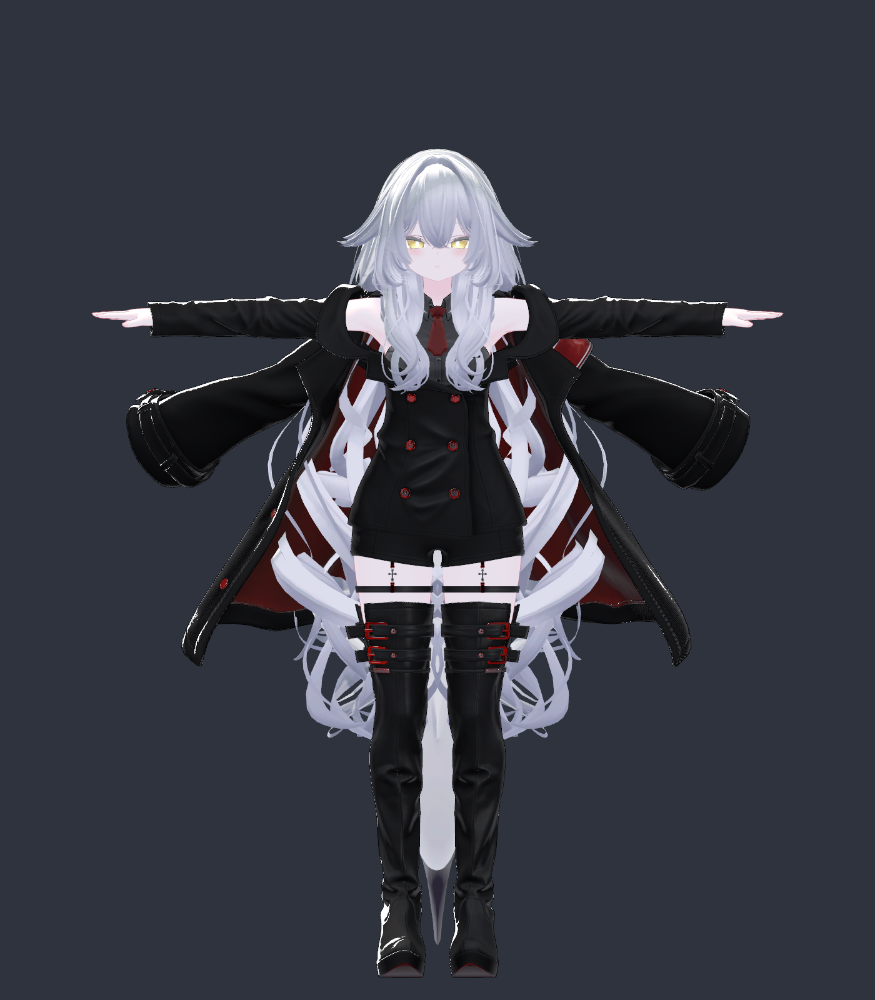
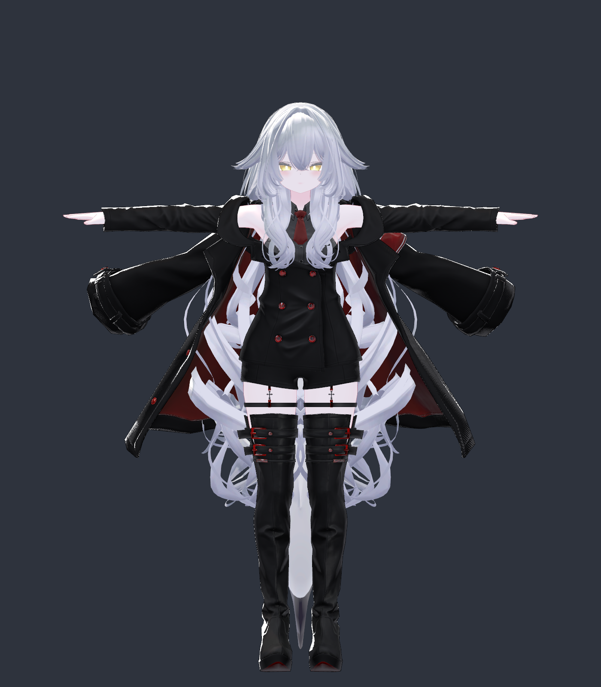

← Meshia VPM repository / VPMリポジトリ
Matching renders of the original avatar and a 69,823-triangle FA-QEM configuration. Both copies went through the same NDMF build pipeline; only the original copy had Meshia removed. Same camera, lighting, resolution and rest pose.


Overall silhouette comparison. Use the close-up views to inspect small details.
The complete NDMF build contains 69,823 triangles, 177 below the 70,000 target. The face is unchanged, hair protection remains enabled, and the thigh straps and name tag retain full source detail. The previous strap gaps are not visible in the captured front view. Boot and jacket shading is more angular at close range; inspect the comparison at full resolution.
These are static Unity build renders, not VRChat screenshots or a complete animation test. The 69,823-triangle result was verified both through the complete NDMF build and in Unity Play Mode after applying the settings to the main avatar. Previous settings passed a local VRChat visual check; the new 70k settings still need their own movement, clothing-toggle and local VRChat check. Both jacket sleeve sets are present in the captured source state.
Triangle totals count all meshes retained by the build, including inactive accessories. They do not measure frame rate. Automatic budget redistribution is disabled to keep the tested allocations stable. The face is not simplified; most reductions come from the body, clothing and shark pet. Meeting the triangle target does not by itself establish the complete avatar performance rating.